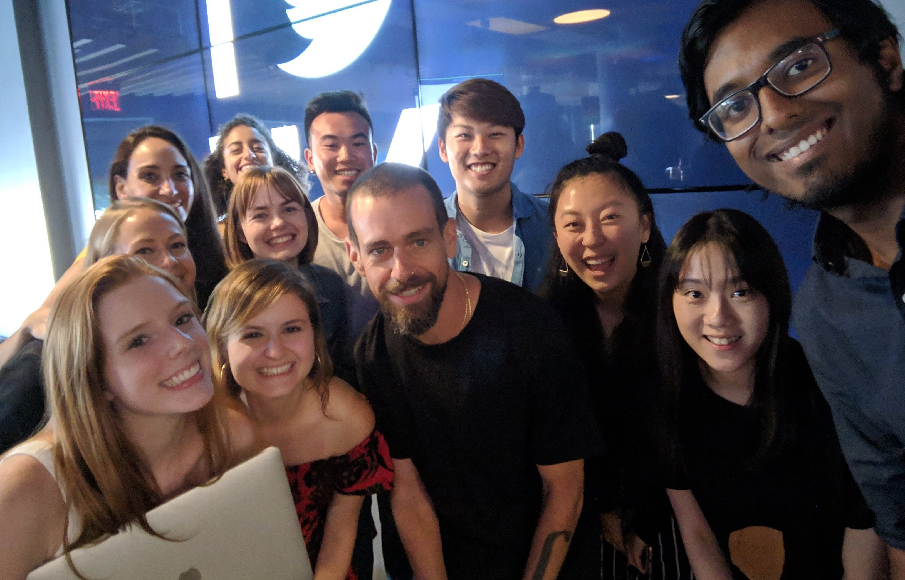

Summer 2019
During the summer of 2019, I worked at Twitter NYC as a Product Design Intern. I was a part of the Creative Product Team on the consumer side of the design and research org. From there I assisted with touching on different parts of the app and as well as contributing to Twitter's new design system.
My work mainly focused around visual and interaction design. As it was my first internship at a Tech company, I was able to work with engineers, user researchers and product managers to ship out something that I've designed for the first time. Due to NDA, I cannot share my work publicly. If you're a recruiter or manager, please reach out to me to view some of the work I've done at Twitter.
Some highlights working at Twitter were: meeting Jack and the executive team, random celebrity spottings like Lil Nas X at the NYC office, flying out to San Francisco both times for orientation and connecting with others interns, and for Twitter Design day! And of course, living in New York City itself was an amazing experience. It was definitely a fun and memorable summer at Twitter!